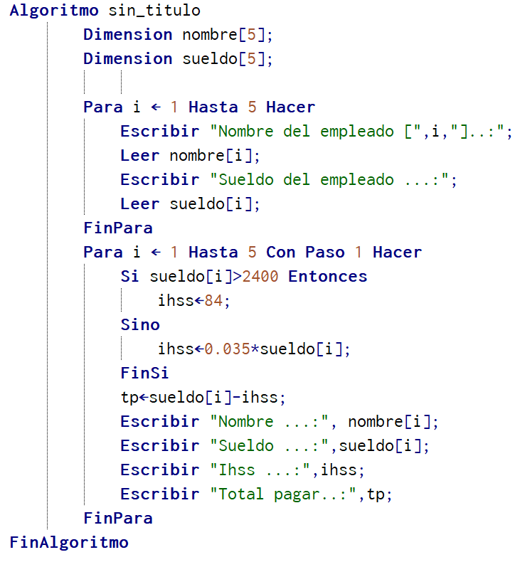

Ejemplo
Se requiere un programa con estructuras repetitivas que permita leer las notas de N estudiantes de la asignatura de Idiomas. Se tiene en cuenta que cada nota pertenece a un desempeño escolar.

Una vez finalizada el recorrido debe mostrar los siguientes datos
- Cantidad de notas por cada categorías
- Promedio de notas por cada categoría
Solución
Es importante identificar que la solución es aplicar una estructura repetitiva conociendo la cantidad de notas. Dentro del ciclo se pregunta por las notas una sola vez ya que el ciclo lo repite la cantidad de veces indicada y a continuación relacionar el desempeño de cada nota con la cantidad recibida. Una vez finalizado el ciclo se procede a calcular los promedios y mostrar resultados.
Análisis

Prueba de escritorio

Tabla de procesos

Pseudocodigo
Dfd

Simulación
Java con Scanner

Java con JOptionpane